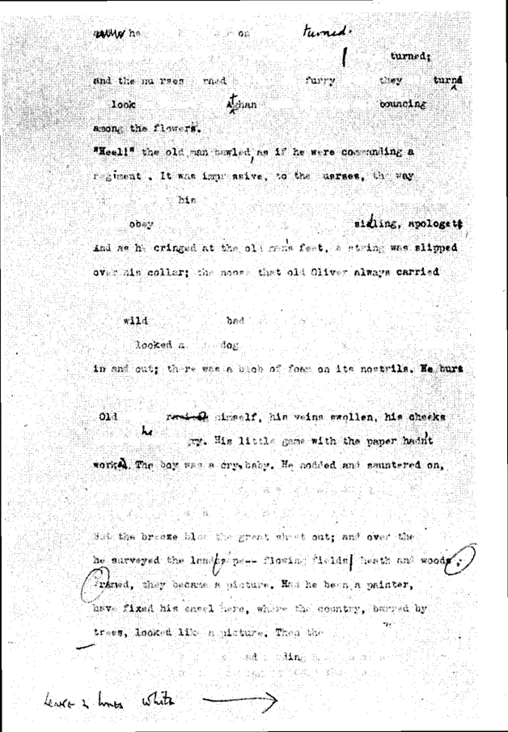

Bölüm 17
Between the Acts
The Years’de geleneksel gerçekçi romana o geri dönüşten -bize kalırsa açıklanması olanaksız o geri dönüşten sonra- Virginia Woolf yazdığı son roman Between the Acts’de (Perdeler Arası) kendine özgü roman türüne yeniden yöneldi iyi ki. Gerçi bu son romanı, Mrs. Dalloway, To the Lighthouse, The Waves gibi bir başyapıt sayılamaz. Ama aynı türün bir devamıdır hiç olmazsa. Eğer The Years’den sonra başka bir roman yazmasaydı, onun kendini öldürmeden önce nasıl olsa tükendiğini sanacaklardı hayranları. Virginia Woolf, çok kısa olan, ancak 150 sayfa tutan bu son romanını, İngiltere sürekli havadan bombalanırken, büyük acılar içinde, inanılmaz bir çaba göstererek, hattâ can çekişerek diyebiliriz, yazdı. Bu yüzden, ne yazık ki, adını anımsamadığımız biri, İngiliz dilinde intihardan önce yazılmış en uzun mektup diye tanımladı bu son kitabı. Between the Acts’ı, 26 Şubat 1941’de bitirdi. Bir iki ay sonra da kendini öldürdü. Kitabı eşi Leonard Woolf yayına hazırladı.
Yazarın bütün iyi romanları gibi, Between the Acts’ın anlaşılması güçtür; hattâ okuyucuların kafasını karıştırır, eleştirmen Lord David Cecil’e bakılacak olursa. Ama okuyucu, Mrs. Dalloway, To the Lighthouse, The Waves ya da herhangi başka güç bir roman için yapabileceği gibi, romanı ilk okuduktan sonra araya kısa bir süre koyup yeniden okursa, çok daha iyi anlar, anladıkça da daha çok keyfine varır.
Virginia Woolf, terk ettiği şiire geri döner burada. Örneğin, İsa’nın küçük oğlu bir çiçek görür: “The flower blazed... It blazed a soft yellow... It filled the caverns behind the eyes with light.” (Çiçek alev aldı... Yumuşak sarı bir alevle tutuştu... Gözlerin arkasındaki mağaraları ışıkla doldurdu.) Ama çocuk bu çiçek karşısında böylesine coşmuşken, dedesi, en iyi niyetlerle, münasebetsiz bir şaka yapar; bir çalının arkasından çıkıverip üstüne saldırır ansızın. Çocuk ağlamaya başlar. Bu çocuğun annesi İsa, boş bir odaya bakar:
“The room was a shell, singing of what was before time was; a vase stood in the heart of the house, alabaster, smooth, cold, holding the distilled essence of emptiness, silence.”
(Oda, zaman olmadan önce olanların şarkısını söyleyen bir deniz kabuğuydu. Bir vazo duruyordu evin yüreğinde, su mermerinden yapılmış, pürüzsüz, soğuk. Boşluğun damıtılmış özü olan sessizlik vardı içinde.)
Mrs. Dalloway gibi, Between the Acts da bir tek günde geçer. Ama dekor, Londra değil, kırsal bölgede Pointz Hall adlı konak ve bu konağın bahçeleridir. Zaman, 1939 yılında bir Haziran günüdür; yani aynı yılın Eylül’ünün ilk günü patlak veren İkinci Dünya Savaşından iki ay kadar önce. Köyde oturanların, Haziran ayında Pointz Hall’un sahibi Mr. Bartholemew Oliver’in topraklarında açık havada bir temsil vermeleri bir gelenek halini almıştır yedi yıldan beri. Bu yılın temsilinin konusu İngiltere tarihidir. Temsilin metnini hazırlayan da Miss La Trobe adlı, köye yerleşmiş bir oyun yazarıdır. Virginia Woolf, savaşı uygarlığın sonu bildiğinden, bu kitabın yazıldığı sırada İngiltere açısından en tehlikeli aşamasında olan Alman saldırısı her şeyi yıkıp yok etmeden önce, ülkesini korumak ve tarihini bir kez daha gözler önüne sererek yüceltmek istemişti her halde. Bunu yapabilmek için de dekor olarak, her şeyin hızla değiştiği Londra gibi büyük bir kenti değil, geçmişin hâlâ canlı kaldığı kırsal bölgeyi, Oliver ailesinin nerdeyse iki yüz yıldır oturduğu toprakları seçmişti. David Daiches’in Between the Acts’ı “kahramanı İngiltere olan lirik bir tragedya” (“a lyrical tragedy ıvhose hero is England”) diye tanımlamasının nedeni bu olsa gerek.
Virginia Woolf, Between the Acts’a eski İngiltere’yi simgeleyen “Pointz Hall” adını vermeyi düşündüğü gibi, “The Next War” (Önümüzdeki Savaş) adını vermeyi de düşünmüştü bir ara. Nitekim kitapta anlatılan o Haziran günü boyunca, savaşın patlamak üzere olduğu her an anımsatılır okuyuculara. Kişiler, konuşmaları arasında, Avrupa’da durumun gittikçe daha tehlikeli bir hâl aldığını, Nazi Almanyası’nın saldırıya hazırlandığını; İngiltere’nin istilâya uğrayabileceğini; her yerin tanklar, toplar ve uçaklarla dolduğunu; bu topların her an patlayabileceğini, tankların harekete geçebileceğini, uçakların havalanabileceğini söylerler. Temsilin sonuna doğru da, İngiliz savaş uçakları köyün üstünden geçer. Romanın kişilerinden biri, dolaylarda kamp kuran İngiliz askerlerinin, biraz geri zekâlı bir köylü kızı kandırıp, sırayla ırzına geçtiklerini anlatır. Böylece Virginia Woolf, başlamak üzere olan savaşın en çirkin yanlarından birini, kadınlara saldırıları anımsatmış olur bizlere. Gerçi Between the Acts’da kişilerin iç dünyaları da bize yansıtılır. Ama bu roman, To the Lighthouse ya da The Waves gibi, yalnız iç dünyaları yansıtmakla kalmaz. Savaş üstünde sürekli durulduğu için, dış dünyada olup bitenlerin de bilincinde oluruz her zaman. Kişilerin iç dünyalarıyla çevrelerini saran dış dünya arasında bir bağlantı kurulduğu gibi, geçmişle şimdiki zaman arasında da bir bağlantı kurulur. Çünkü temsil, geçmiş zamanı ele alır; bu temsili seyredenler ise 1939 yılında bir Haziran gününü yaşamaktadırlar.
Between the Acts’da iki ayrı metin vardır. Biri romanın metni, öteki de temsilin metni. Bu iki metin iç içedir; yani biri bitip öteki başlamaz. Aynı anda, hem temsilde söylenenler ve olup bitenler aktarılır okuyuculara; hem de temsili seyredenlerin yaptıkları, söyledikleri ya da akıllarından geçenler. Virginia bu temsil için “pageant” sözcüğünü kullanır. Bilindiği gibi, “pageant” sözlerin değil de gösteri öğelerinin, yani canlı tabloların, kostümlerin, dekorun, müziğin, dansların ağır bastığı bir seyirliktir. Kafadan çok, gözlere ve kulaklara yönelir. Ne var ki, bu seyirlikte dekor doğadır; müzik de eski plakları çalan bir gramofon. Oyuncularla seyirciler arasında belirgin bir sınıf ayrımı olması da önemlidir. Oyuncular yoksulca insanlar, çoluk çocuğuyla köy halkı ya da o bölgede görev almış küçük memurlardır. Seyirciler ise, yüksek orta sınıftan ya da aristokrasiden, toprak sahibi varlıklı kişilerdir.
Başlangıçtan o güne değin İngiliz tarihini ele alan seyirlik, fazlasıyla bölük pörçüktür. Bir kısmı şiirle, bir kısmı düzyazıyla kaleme alınmıştır. İçinde bir Elizabeth Çağı tragedyasını ya da bir Restoration Çağı komedyasını andıran parçalar vardır. Seyircilerin yorumları, kimi zaman isabetli, kimi zaman saçma sapandır ve bu yorumlar temsil boyunca sürer. İlkin prolog rolünde bir küçük kız ortaya çıkar. “England am I” (İngiltereyim ben) der. Sonra, daha büyükçe bir kız, Chaucer Çağında İngiltere adına konuşur. Arkasındaki ağaçların arasından, Chaucer’in Canterbury Tales’inin hacıları geçer bu arada. Köyde tütün satılan dükkânı işleten kadın, Kraliçe Elizabeth olur. Oyuncuların da seyircilerin de dağılıp şurada burada gezindikleri aralar verilir temsil sırasında. Temsilin metninde geçmişi öven Virginia Woolf, tıpkı Orlando’da yaptığı gibi, ancak XIX. yüzyılı ve Victoria Çağını alaya alır. Bu çağı temsil eden polis üniformalı oyuncu, sözde o dönemle gururlanarak, Victoria’nın kraliçe olduğu yıllarda yaşayanların, sahte dindarlıklarını, sahte hayırseverliklerini, sahte erdemlerini yerin dibine batırır. Pointz Hall dolaylarındaki kırsal bölgede yaşam ve değer yargıları, 1939’da bile, Victoria Çağına öyle yakın, öyle tutucudur ki, seyircilerin bir kısmı fena halde alınırlar polis kılığındaki oyuncunun söylediklerinden.
Bu temsilde aksamalar, beceriksizlikler, gülünç durumlar olması; kimi zaman köy halkının söylemeleri gereken sözleri unutmaları, şaşkına dönmeleri, doğaldır elbette. Ancak, seyirliğin metni zayıftır. İleride ele alacağımız aynalar sahnesi bir yana, metinde çarpıcı ya da etkileyici hiçbir yan yoktur. Virginia Woolf, sözde Miss La Trobe’un yazdığı oyuna, mahsus acemice bir hava vermiş olabilir elbette. Ama bunu okuyuculara sezdirmesi gerekirdi o zaman. Between the Acts’ın başlıca kusuru, bu zayıf metindir bize kalırsa. Yazar, temsilin biraz uydurma bir metni olduğunu söyleyip, bunu romanına hiç aktarmasaydı ya da doğru dürüst bir metin yazmak zahmetine katlansaydı, Between the Acts çok daha iyi bir kitap olurdu kuşkusuz.
Metni yazan ve sahneye koyan Miss La Trobe da hiç hoşnut değildir bu yapıtından. Gerçi amatör oyuncular, yazdıklarını bir hayli bozmuşlar, rollerini unutmuşlardır ara sıra. Ama kendisi de kabahatlidir. Sanatçılara özgü ve Virginia Woolf’un çok yakından bildiği kuşkuları ve tedirginlikleri çeken Miss La Trobe, düşgücünde canlandırdıklarını seyircilere aktaramamanın, başarısızlığa uğramanın acısını çeker. “Bu bir fiyasko, gene kahrolası bir fiyasko her zaman olduğu gibi” (“It vas a failure; another dammed failure, as usual”) demesinden, bunun ilk başarısızlığı olmadığını anlarız.
Yazar, Miss La Trobe üzerine fazla bilgi vermez. Ancak şu kadarını anlarız: Tiyatro oyuncusu olmak istemiş, başarısızlığa uğramıştır. Bir çayevi işletmek istemiş, bunu da becerememiştir. Lezbiyenliği yüzünden sıkıntılar çekmiş; öteki kadınlardan değişik olduğu için, doğanın onu lânetlediğini sanmıştır. Aşık olduğu, “yatağını ve kesesini paylaştığı” (“shared her bed and her purse”) tiyatrocu kızın ihanetine uğramıştır. Yalnız kalmaktan çok korktuğu için de, içki içmek, meyhanelerde bulduğu o sıcak dostluk havasına sığınmak tek kurtuluş yolu olmuştur. Temsilden sonra, çamur dolu bir göletin yanında dururken, Miss La Trobe’un gözü, bir sazan balığına ilişir. O balık gibi, “çamurdaki karanlığa” (“darkness in the mud”) gömülmek isteğine kapılır. Çareyi doğru meyhaneye koşup viski içmekte bulur.

Between the Acts'in son dizgisinden bir sayfa. Virginia Woolf'ıın düzeltmeleri ve editör
Leonard Woolf'ıın eklemeleriyle.
Ne var ki, Miss La Trobe boş bir kadın değildir. Yaratıcı bir yanı ve sanatçıların savaşçı ruhu vardır onda. Başarısızlığa uğradığı için acı çeker, ama yazmaktan vazgeçmez. Nitekim, meyhanede hemen toparlanır, yeni bir oyun düşünür. Ve ne ilginçtir ki, sanki oyunun konusu İsa ile kocası Giles’ın ilişkisiymiş gibi, o çiftin aynı günün gece yarısı yaşayacakları olduğu gibi yansıtılır. Hattâ romanın en son tümcesi olan “Perde açıldı” (“The curtain rose”) aynen vardır Miss La Trobe’un tasarladığı oyunda, “It would be midnight, there would be two figures... The curtain would rise” (Gece yarısı olacaktı, iki kişi olacaktı... Perde açılacaktı) denilir.
Between the Acts’da, mutsuz olan tek kişi Miss La Trobe değildir. Isa’nın kocası Giles de mutsuzdur. Toprak sahibi bir çiftçi, İngilizlerin deyişiyle bir “gentleman-farmer” olmak istemiş. Ama salt para işleriyle uğraşan, müşterilerinin hisselerini borsada pazarlayan bir “stock-broker” yani bir borsa simsarı olmak zorunda kalmıştır. Londra’da oturur; ancak hafta sonları ailesini görmeye Pointz Hall’a gelir. Karısı Isa ile arasında büyük bir gerginlik vardır. Giles, evine öğleyin geldiği halde, gece yarısına kadar bir tek söz bile söylemezler birbirlerine.
Isa denilen Isabella da mutsuzdur. XX. yüzyılın başında doğmuş, otuz dokuz yaşındadır. Güzelliğe tapan bir sanatçı ruhu vardır onda. Şiirler yazar gizlice. Bunları, hiç kimsenin, özellikle kocasının görmemesi için, şiirlerini eski bir hesap defterine temize çeker. Kocasını sever, ama aralarında hiçbir iletişim kalmamıştır. Bu yüzden Isa, Rupert Haines’a âşıktır ya da âşık sanır kendini. Haines, gözleri perişan, sessiz, romantik bir çiftçidir. Yani Giles Oli-ver’in olmak istediği ve olamadığı tipte bir gentleman-farmer’dır. İsa, temsil boyunca, gözleriyle Rupert Haines’ı arar durur. Aralarında hiçbir şey yoktur. Ancak birkaç kez karşılaşmışlardır. Ama Isa, bu adamın perişan gözlerinde bir giz, sessizliğinde yoğun duygular sezmiştir. Isa gibi, Haines da evliliğinde mutsuzdur. Eşi, herkesin nefret ettiği, haşin bir kadındır. Isa, patlak gözleriyle her bir yanı tarayarak, yeyip yutacak bir şeyler arayan bir kaza benzetir bu itici kadını. Kendisiyle Rupert Haines’ı da, durgun bir ırmağın sularında yanyana yüzen kuğular olarak hayal eder.
Başka bir mutsuz da, Virginia Woolf’un çoğu romanlarında görülen eşcinsellerdenWilliam Dodge’dur. Between the Acts’ın bize kalırsa en trajik kişisi olan William Dodge, yazarın öteki eşcinselleri gibi, güzelliğe tapan, duyarlı, ince, kültürlü bir adamdır. Bu yüzden de Isa, çok yakınlık duyar ona. Dodge ise, Isa’nın yakışıklı kocası Giles’dan gözünü ayıramaz. “Only at Giles he looked, and looked, and looked” (ancak Giles’a bakar, bakar ve bakar.) Çünkü kasları güçlü, kıllı, erkeksi erkekler “dimağla hiçbir ilgisi olmayan heyecanlara daldırır onu” (“plunged him into emotions in which the mind had no share”). Romanın en güzel ve aynı zamanda en hüzünlü sahnelerinden biri, William Dodge ile Mrs. Swithin’in karşılaşmalarıdır. Lucy Swithin, Mr. Oliver’in dul kalan kız kardeşidir. Konakta oturur ve geceleri H.G.Wells’in An Outline of History’sini (Tarihin Anahtarı) okur. Yaşlı kadının düşlerinde, çok eskiden ormanlarda, bataklıklarda yaşayan pre-historik canavarların büyük bir yeri vardır. Isa, temsildeki Victoria Çağı taşlamasından sonra halasına bakar; ve ömrünün yarısından fazlasını o çağda geçirdiğine göre, Mrs. Swithin’i nesli artık tükenmiş bir yaratığa “bir dinozora ya da küçücük bir mamuta” (“a dinasaur or a very diminutive mamoth”) benzetir. Mrs. Swithin, dinozor olmasına dinozordur; ama çok güzel huylu, çok ince, çok sevimli minyatür bir dinozordur. Yeni tanıdığı William Dodge’a konağı gezdirirken, adamın adını unutur bir ara. Dodge, ona William diyebileceğini söyleyince, yaşlı kadın “bir genç kız gibi nefis bir biçimde gülümser” (“smiled a ravishing young girl’s smile”). Bu gülümsemeyi gören William Dodge, onun önünde diz çökmek, onun elini öpmek, ona çektiği acıları anlatmak ister:
“At school they held me under a bucket of dirty water, Mrs. Swithin; when I looked up the world was dirty, Mrs. Swithin; so I married, but my child’s not my child, Mrs. Swithin. I’m a half man, Mrs. Swithin; a flickering, mind-divided little snake in the grass, Mrs. Swithin; but you have healed me... So he wished to say; but said nothing.”
(Okulda, başımı pis suyla dolu bir kovaya sokup orada tuttular, Mrs. Swithin. Başımı kaldırınca, dünya kirliydi, Mrs Swithin. Derken evlendim; ama çocuğum, benim çocuğum değildi, Mrs. Swithin. Ben bir yarı-erkeğim, Mrs. Swithin. Otlar arasında bir görünüp bir yok olan, beyni bölünmüş küçük bir yılanım. Ama siz beni iyileştirdiniz... İşte bunları söylemek istiyordu; ancak, hiçbir şey söylemedi.)
William Dodge ile birlikte temsili seyretmeye gelen Mrs. Manresa, Between tlıe Acts’ın kişileri arasında mutlu görünen tek insandır. Dâvet edilmeden öğle yemeğine geldiği için, bol miktarda şampanya getirmiştir yanında. Varlıklı bir Yahudiyle evli olan bu kırk beş yaşlarındaki kadın, son derece çapkın bir erkek avcısıdır. Yaşlı Mr. Oliver bile, onu görünce canlanır. Giles da onun çekiciliğine kapılır, bir ara peşinden gider. Isa, fena halde içerler bu duruma. Kadını, şatafatlı kıyafetiyle ve sözde özgün davranışlarıyla son derece bayağı, cinselliğini sömüren, fazlasıyla süslü bir yaratık sayar. Mrs. Manresa, hiç çekinmeden, aklına geleni söyler. Kentten kurtulup kırlara gelince, korsesini çıkarıp çimenlerde yuvarlandığını anlatır örneğin. O sıralarda “modern” diye nitelendirilen kadınlardandır. Gece yarıları, ipek pijamalarla bahçede dolanır; ses yükselticiyle jazz dinler, üstüste kokteyler içer. Ama aslında tümüyle yapaydır, doğanın vahşi bir çocuğu olmakla övündüğü halde.
O Haziran günü İngiltere tarihi üzerine verilen temsilin en ilginç yanının aynalar sahnesi olduğuna değinmiştik. Bu sahne başlamadan önce, şiddetli bir sağanak olur. “Down it poured like all the people in the world weeping. Tears, tears, tears” (Sanki dünyanın bütün insanları ağlıyormuş gibi yağmur boşaldı. Gözyaşları, gözyaşları, gözyaşları.) der Virginia Woolf. Isa ise, bir iki ay sonra kendini öldürecek olan yazarın ölüm özlemini dile getirircesine, “O that my life could have an ending!” (Ah, yaşamım bir sona erebilse!) diye mırıldanır kendi kendine.
Temsilin son bölümü “The Present Time: Ourselves” (Şimdiki Zaman: Bizler) adını taşır. Bu bölümde söz yoktur. Ne olduğu ilkin anlaşılmaz. Oyuncuların her biri, değişik boylarda, irili ufaklı aynalar taşıyarak, hoplaya zıplaya sahneye fırlar. Şimdiki Zamanın, karşılarındaki seyircilerden oluştuğunu belirtmek istercesine, aynaları sevircilere tutarlar. Sahnedekiler oradan oraya zıpladıkları için, kendilerini bu aynalarda bölük pörçük görebilen, kimi zaman hiç göremeyen seyirciler, fena halde tedirgin olurlar. Yüksek sınıftan, kendini çok beğenen bu adamlar, duruma kendilerini ayarlayamadan, hazırlıksız yakalandıklarını hissederler. Bunun zalimce bir şey olduğunu düşündükleri için, Miss La Trobe’u suçlarlar. Bir kısmı, yazarın onları aptal yerine koyduğundan, onlara hakaret ettiğinden yakınır. Bir kısmı da bu oyunu anlamadıklarını; oysa parasını ödeyip tiyatroya gidince, ne olup bittiğini anlamaya hakları olduğunu söyler. Yalnız kendinden emin Mrs. Manresa, hiç bozulmaz bu duruma. Hattâ kendisine doğru tutulan aynalardan yararlanıp, makyajını yeniler, burnunu pudralar, saçlarını düzeltir. Derken, aynaları seyircilere karşı tutanlar çömelir ve megafondan kimin sesi olduğu anlaşılamayan bir ses yükselir. Bu ses, seyircileri de, okuyucuları da açıkça suçlamaktadır: Buradan gitmeden önce, herkesin kendini olduğu gibi görmesi, açıkça konuşması gerekmektedir. Herkes aynı maldır; herkes hırsızdır. Varlıklılar da, yoksullar da. Megafondan gelen ses, sahnede dekor olarak kullanılan ve uygarlığı temsil eden kırık dökük duvara bakılmasını ister ve aynaları özellikle ışıldatarak, şöyle der:
“Look at ourselves, ladies and gentlemen! Then at the wall; and ask how’s this wall, this great wall which we call, perhaps miscall, civilization, to be built by orts, scraps, and fragments like ourselves?”
(Kendimize bakalım, bayanlar, baylar! Sonra da şu duvara bakalım ve şunu soralım kendimize: Bu duvar, belki de yanılarak uygarlık adını verdiğimiz bu büyük duvar, bizler gibi artıklar, yırtık pırtıklar, küçük parçalar tarafından nasıl kurulabilecek?)
Bu soru karşısında, Mrs. Manresa bile insanlaşır, ağlamaya başlar; gözyaşları, yüzündeki pudraları silip süpürür.
Oyun bitmiştir. Şimdi de, saygıdeğer Mr. Streat sahneye çıkar. Attığı nutuktan, onun da fena halde bozulduğu anlaşılır: Bu temsilin ne anlama geldiğini, ne gibi bir mesaj verdiğini kavrayamadığını, şaşkına döndüğünü bildirir. Her nedense bölük pörçük artıklar olmakla suçlandıkları halde, gene de kendilerini büyük bir bütünün parçaları saydıkları için, mutlaka birleşmeleri gerektiğini söyler. Saygıdeğer din adamı, temsilin aslında çok açık seçik mesajını böylece geçiştirdikten sonra, pratik işleri ele alır: Bu temsil, kilisede kurulması tasarlanan elektrik tesisatına para sağlamak amacıyla verilmiştir. Oysa ancak 36 sterlin toplanmış ve 175 sterlin daha gerekmektedir. Hayırseverlerden hemen vermelerini istediği para tam toplanmaya başlandığı sırada, savaşın patlamak üzere olduğunu haber veren ve on iki İngiliz savaş uçağından oluşan bir filo, tepelerinde uçar. Eski gramofondan gıcırtılı bir plak İngiltere’nin milli marşı “Tanrı Kralı Korusun”u çalar ve herkes dağılır. Sahneye, daha doğrusu sahne olarak kullanılan çimenli alana, dolaylardaki inekler gelir.
Temsilin sonu etkileyici olduğu gibi, romanın sonu da etkileyicidir. Virginia Woolf’un en iyi romanlarından biri sayamayacağımız Between the Acts’ın ikinci yarısı, birinci yarısından çok daha güzeldir zaten. Ne var ki, yazar, bundan önceki romanlarında her şeyi toz pembe görmemekle birlikte, yaşamın ve dünyanın güzelliğine umut bağlamış gibi bir tutum benimsemişken; bu son romanın özellikle son sayfalarına düşkırıklığı, umutsuzluk ve yoğun bir karamsarlık egemendir. İşte bu yüzden Jean Guignet, bir çeşit vasiyetname niteliği görür Between the Acts’da. Daha önce de değindiğimiz gibi, başka bir eleştirmen de, bu romanı intihardan önce yazılmış uzun bir mektup sayar. Kitabın başlıca kişileri mutsuzdurlar. Giles, lânetlenmişcesine mutsuz olduğunu düşünür. Isa, Virginia Woolf’un bir mektubunda yazdığı, daha önce de sözünü ettiğimiz bir imgeyi kullanarak, kendini, “sırtında yükü, bir çölü aşan küçük bir eşeğe” benzetir (“little donkey... Crossing the desert... Bearing your burden”).
Virginia Woolf’un, romanlarından birinde, büyük çağdaşı D.H. Lawrence’ın Lady Chatterley’s Lover’ını alaya aldığını biliyoruz. Bu da hiç şaşırtmaz bizi; çünkü birbirinden böylesine farklı iki yazar görmek pek olası değildir. Oysa Virginia Woolf güncesinde, Isa ile Giles’ın ilişkisini yazarken, hem Freud’u, hem de D.H. Lawrence’ı okuduğunu ve Lawrence ile kendisi arasında “fazlasıyla ortak yanlar” (“he and I have too much in common”) gördüğü için, tedirginlik duyduğunu söyler. İşte bu tümce, bizi derin bir hayrete düşürür. Bu iki büyük romancı arasında ne gibi ortak yanlar olabileceğini bir türlü anlayamayız. Gelgelelim, Isa ile Giles’in ilişkisi bir aşk-kin ilişkisidir. Birbirilerine hem tutkuyla bağlıdırlar, hem de birbirilerinden nefret ederler. Isa, kendi dediği gibi, aşkla kin arasında parçalanmaktadır. Bu tür tutkular D.H. Lawrence’ın romanlarında sık sık ele alınır. Aşk-kin ilişkisinin, yoğun bir cinsel yanı da vardır doğal olarak. Virginia Woolf’un romanlarında hiç ele alınmayan, ancak son romanında görülen bu çapraşık duyguları göz önünde tutarak, D.H. Lawrence’a fazlasıyla benzediğini söylerken, ne demek istediğini biraz anlamaya başlarız.
Between the Acts’ın son sayfalarında, geceleyin herkes çekildikten sonra, gün boyunca birbirilerine bir tek söz söylemeyen Isa ile Giles başbaşa kalırlar. Hâlâ sessizdirler; çünkü ancak kavga ettikten sonra sevişebilecekler ve konuşabileceklerdir: “They were silent... Before they slept they must fight, after they had fought they would embrace.” (Susuyorlardı... Uyumadan önce savaşmaları gerekiyordu. Savaştıktan sonra kucaklaşacaklardı.) Ve roman, sanki Isa ile Giles’ın başkişileri olduğu bir tiyatro oyunuymuş gibi, şu sözlerle biter: “Then the curtain rose. They spoke” (O zaman perde açıldı. Konuştular.)